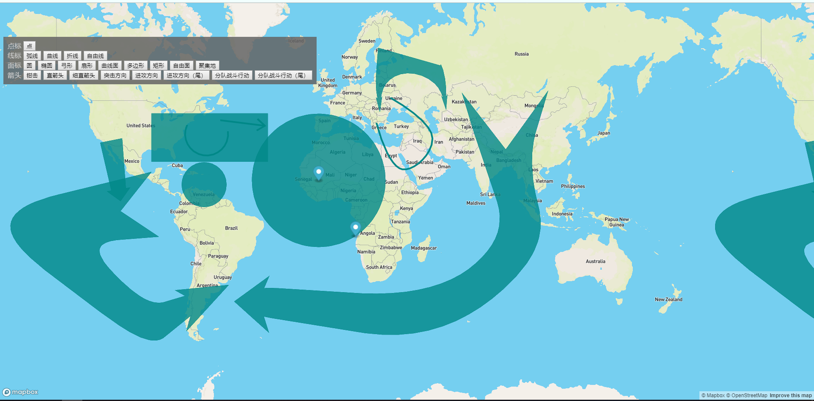

前言
- 啰嗦几句：最近经历了很多事情，生活上、工作上、感情上各种事情。就一句话，不会一直如自己愿的，命运总是看不惯一个人安逸太久。也一个多月没有更新技术博客了，一方面是工作太忙，真的很忙。一方面是心理的打击太大，没心思去写了。今天趁着心情缓解一些，就写一个关于工作中遇到的需求。地图标绘，基于mapboxgl版本的。
- 说实话，刚听到这个需求的时候，我的内心是拒绝的。因为了解mapboxgl的道友们都会明白，mapboxgl的api很少，真的很少。它是重在展示而不是交互。关于标绘，之前只是知道有这个东西，觉得很复杂，就没有深入了解其原理。其实即便是这次能粗略的改版成功，底层的算法我也是没有细看，只是了解其中的流程而已。
原理简介
- 总流程：标绘的总流程大致分为3步
- 第一步：根据鼠标点击事件获取几个关键点
- 第二步：用算法，根据所点击的关键点，生成其他的点
- 第三步：利用生成的点进行填充渲染。就得到了所需的标绘形状。
- 所以核心的还是在算法里面，所幸的是有位开源的大佬已经把算法写好了，看这里
plot,所以剩下的相对来说简单一点了。
现有问题
- mapboxgl本身是不带绘制的功能的，就是没有像openlayers那样提供
Draw方法的。 - mapboxgl的图层数据源里面，只有类型为
geojson是可以实时方便修改的，其他的数据源都是服务连接或者图片和视频，做不了标绘。 - mapboxgl对点线面类型的图层，必须是分开的单独渲染。所以不能像openlayers一个图层可以同时展示三种类型的要素，进行渲染展示。
- mapboxgl的popup和openlayers里面overlayer还是有些区别的。这也就影响了编辑拖拽的问题。不能像ol那样直接让overlayer的html元素样式为一个很小的方块。然后，后续的方法就不能使用了。
- 源码里面的算法是根据平面坐标进行计算的，但是mapboxgl里面获取的是经纬度。如果是按照经纬计算，那么最明显的问题，就是画圆的时候，画的是一个鸡蛋，而不是圆。
解决方案
- 针对一个图层不能同时渲染点线面三种类型的要素，那么就创建三个图层分别渲染点线面。但是用的是同一个source数据。
- 由于mapboxgl本身是不带有点线面三种类型的定义的，我只能借助openlayers中的一些定义，然后获取最终的坐标数据，添加到source里面进行渲染。
- 对于popup问题，好在mapboxgl提供了marker类型的，而且还可以拖拽，那我只需在拖拽的事件中获取坐标数据就行了。
- 针对坐标系问题，在计算之前把经纬度坐标转成投影平面坐标就可以了，然后计算之后再换算经纬度就可以了。
实现
- 有了思路剩下的就是爬坑了，一点点的打断点进入源码，修改相关的方法和逻辑。
- 具体的我也没法用语言描述，只能说，多坚持就好了。
- 总之，做的时候很难的，几度是想要放弃的。刚开是一点头绪都没有。最后还是啃了下来，由于时间紧迫，编辑中移动整个标绘对象的功能没有完成。而且打包压缩，我是整个把ol的源码压缩进入的，所以js文件是比较大的。打包工具我也没有换，还是用的gulpfile打包工具。
成果
- 展示一下成果：

代码
- GitHub上有地址：
mapbox-gl-plot
总结
让过去的就过去吧，不是自己的，强求是真的换不来。命里有时终须有，命里无时莫强求。-----共勉


{kind=link}